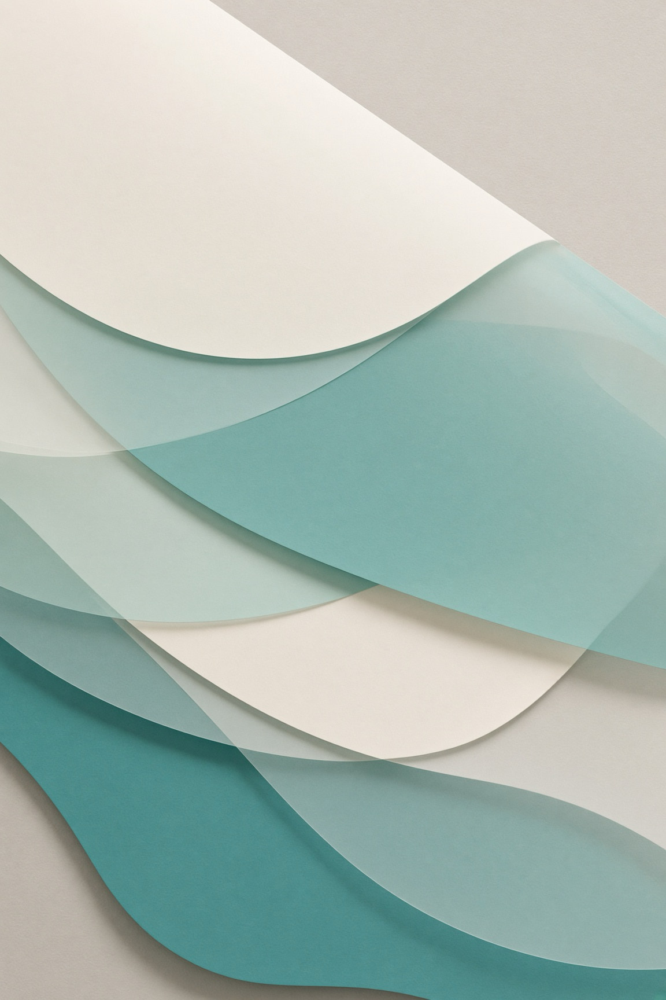

仕事の流れを、見える形に。
紙、Excel、チャット、手作業に分かれた仕事を観察し、どこで迷い、何を覚え続けているのかを整理します。
PEOPLE, WORK & TECHNOLOGY
現場の
現場の制約や人の特性から出発し、業務整理、AI活用、小規模なソフトウェア開発を通じて、続けやすく、扱いやすい仕組みを設計しています。

PREMISES
現場の制約や、人の特性から考えています。
大きなシステムを最初から作るのではなく、続けられる単位に分けます。
作業は途中で止まる。決めたことや次の一手を、人の記憶や会話の外に残せるようにする。
情報量や手順を減らし、判断が必要なところと、道具に任せられるところを分ける。
見え方、聞こえ方、記憶負荷の違いは個人差がある。無理なく扱える形を優先する。
オフラインでも動く、導入や保守の負担が小さい、既存の仕事の流れを大きく崩さない。
最初から完成形を目指さず、必要な部分だけを作り、使ってみて調整する。
WHAT I DO
小規模な事業や、福祉・医療・教育の現場へ。
何をつくるかが決まる前の、
困りごとの整理から始めます。
紙、Excel、チャット、手作業に分かれた仕事を観察し、どこで迷い、何を覚え続けているのかを整理します。
一度に変えるのではなく、手順や役割を小さく分けます。人の判断が必要なところと、道具に任せられるところを見つけます。
手順書で十分か、AIが役立つか、小さなアプリが必要か。使う人の負担と、続けて運用できることを基準に考えます。
手作業をまとめた変換ツールSERVICES
仕事の整理から、小さな試作まで。
必要な範囲を一緒に考えます。
複雑になった仕事を整理し、人が行う部分とAIに任せられる部分を切り分けます。必要に応じて、運用手順やAI用の指示書まで設計します。
Excel、紙、手作業で行われている業務を整理し、必要な部分だけを小さなアプリや自動化として試作します。
見え方、聞こえ方、記憶負荷、情報量など、人による違いを前提として、無理なく扱える仕組みを考えます。
CASE STUDIES
何に困り、どう考え、何をつくったか。
仕事と人の制約から考えた、4つの事例。
分野で探す
選んだ分野に該当する制作を、枠と「該当」の印で示します。下の制作と現在の探求にも適用されます。
Soujo（層序）
AlchemIIIF
Utsushi.Win
Hitoiki（一息）
この分野に該当する事例はありません。
自身の制作物を通じた設計・実装事例です。実際の業務課題に合わせたカスタマイズや、新規ツールの試作開発を承っています。機能と制限は公開資料に基づいて紹介しています。
似た困りごとがあれば、相談例と連絡先へMORE WORK & WRITING
アクセシビリティの発信や、
現場・日々の暮らしから考えた道具。
PDFや画像の切り出し、資料情報の入力、確認・承認、公開をつなぐWebアプリ。認知アクセシビリティを方針に、資料整理の工程を考えています。
マイク、PCで再生中の音、音声・動画ファイルを、リアルタイムで日本語字幕にするmacOS・Windows向けアプリ。音声認識はPC内で行い、認識中と確定後の文字を色で分けて前面の字幕ウィンドウに表示します。システム音声の字幕化には、ループバック用デバイスの準備が必要です。
この分野に該当する項目はありません。
すべてのリポジトリを見るIN PROGRESS
開発中、または実験段階のものです。
完成や導入実績を示すものではありません。
就労継続支援B型向けに、個別支援計画、支援記録、出欠や期限をまとめる業務支援アプリです。日々の支援記録と期限管理に特化し、現場の入力負担を減らす設計です。
就労継続支援B型向けに、記録と工賃計算を端末内で扱うアプリです。まずは現場で最も負担の大きい日々の記録と工賃計算の正確性を支えるコア機能から構築しています。
端末内でデータを扱う家計簿アプリです。
片耳で聴くとき、ステレオ由来の違いを音色の手掛かりで伝えられるかを探る音響実験です。実機での継続再生や聴取評価は未検証です。
この分野に該当する項目はありません。
WORKFLOW & QUALITY
相談から納品までの流れと、
安心して使い続けていただくための品質基準です。
まだ固まっていない困りごとをお聞きし、現場の制約や人の特性に合わせて課題を整理します。
手順書の改善で済むか、AIや小規模ツールを作るべきか、最小限のコストと負担で済む方法を提案します。
いきなり大きなシステムを作らず、画面や手順の試作を実際に触っていただきながら、認知負荷や使い勝手を調整します。
MozillaのWebテストプロジェクトにコミュニティとして参加した経験を生かし、自動テスト・アクセシビリティ検証・回帰防止を行ったうえで、現場で安心して使える状態を確かめて納品します。
ABOUT
SilentMalachite
考古学・教育・福祉・医療から、
ソフトウェアとAIの活用へ。
考古学、高校教育、障害福祉、医療、就労支援。異なる現場を経験するなかで、技術だけでは問題が解決しないことを学んできました。仕事の手順、情報の伝わり方、使う人の負担まで含めて考える必要があります。
いまは、現場の仕事を理解し、必要な部分だけを技術へ置き換えることに取り組んでいます。ソフトウェア開発やAIエージェントの活用も、そのための手段です。課題を整理し、小さくつくり、人が続けられる形を考えています。
略歴
考古学 → 高校講師 → 身体障がい者施設主任支援員 → 病院検査業務 → 就労継続支援B型職業指導員
保有資格
産業カウンセラー
QA経験
MozillaのWebテストプロジェクトにコミュニティとして参加
強み
福祉・医療・教育・文化財の現場経験があるため、専門用語や現場特有の制約を一から説明いただかなくても、同じ目線で設計に入ることができます。
プロジェクト参加や協業についてもご相談ください。 連絡先を見る
CONTACT
こんな課題があれば、ご相談ください。
いま行っている仕事と、どこで困っているか。わかる範囲の言葉でお知らせください。
ご連絡は、SNSまたは電子メールでお願いします。
メール：daydream_garden[at]
送信時は「[at]」を「@」に置き換えてください。